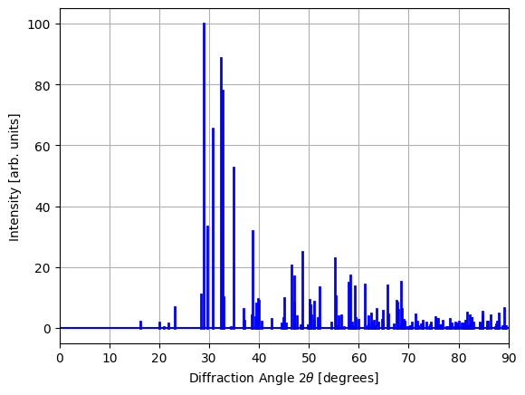
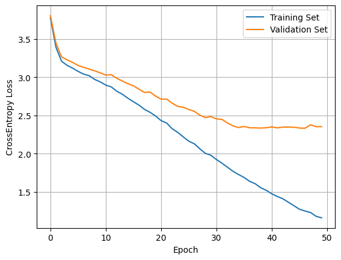

XRD Modeling#
import pandas as pd
xrd_df = pd.read_csv('xrd_dataset_clean.csv')
display(xrd_df)
| mp_id | formula | composition | crystal_system | symmetry_symbol | volume | density | xray_peaks | xray_intensities | |
|---|---|---|---|---|---|---|---|---|---|
| 0 | mp-1005 | FeP | {'Fe': 1, 'P': 1} | Orthorhombic | Pnma | 90.583862 | 6.366076 | [23.15086164,31.02195798,33.23866128,34.822846... | [4.73131274,17.6544138,71.4334109,21.8151441,1... |
| 1 | mp-1006367 | Ce2HfSe5 | {'Ce': 2, 'Hf': 1, 'Se': 5} | Orthorhombic | Pnma | 785.754385 | 7.215011 | [13.59855865,14.68007171,15.5587516,17.2161627... | [9.04260718,3.88889592,14.8704078,0.0717627581... |
| 2 | mp-1001606 | LuFeC2 | {'Lu': 1, 'Fe': 1, 'C': 2} | Orthorhombic | Amm2 | 45.919844 | 9.215206 | [24.87354653,25.79708699,30.23085522,36.139916... | [39.06976227,9.24752455,24.85129267,100.0,18.6... |
| 3 | mp-1001613 | LuGa | {'Lu': 1, 'Ga': 1} | Orthorhombic | Cmcm | 87.819318 | 9.253483 | [16.89543051,22.68791393,28.22757053,32.128373... | [0.568120675,9.04300155,29.5353313,100.0,39.95... |
| 4 | mp-1008624 | YBiPd | {'Y': 1, 'Bi': 1, 'Pd': 1} | Cubic | F-43m | 74.987877 | 8.952998 | [23.01240126,26.63332165,38.0207848,44.9107308... | [36.27131039,27.19850555,100.0,19.56480595,8.0... |
| ... | ... | ... | ... | ... | ... | ... | ... | ... | ... |
| 16420 | mp-1213830 | Ce3W(ClO2)3 | {'Ce': 3, 'W': 1, 'Cl': 3, 'O': 6} | Hexagonal | P6_3/m | 408.805926 | 6.552238 | [10.94822859,19.02128174,19.71983192,21.998023... | [54.0912233,1.50813133,2.77921414,4.13294744,4... |
| 16421 | mp-1191620 | PuB4Ru | {'Pu': 1, 'B': 4, 'Ru': 1} | Orthorhombic | Pbam | 244.423386 | 10.552355 | [15.29269094,16.67763625,21.34936852,25.258563... | [2.17205238,6.61441181,20.8615588,100.0,34.133... |
| 16422 | mp-1209360 | Pr5Bi3Br | {'Pr': 5, 'Bi': 3, 'Br': 1} | Hexagonal | P6_3/mcm | 552.581472 | 8.482577 | [10.53062158,18.29148783,21.1515142,22.5386135... | [3.2436827,2.33769877,0.804064192,8.14582475,1... |
| 16423 | mp-1190710 | Sc5(In2Co)2 | {'Sc': 5, 'In': 4, 'Co': 2} | Orthorhombic | Pbam | 440.878854 | 6.040735 | [10.18858728,12.69727266,15.48118582,19.264295... | [1.37660375,0.0427657761,1.92963728,5.23703683... |
| 16424 | mp-316 | MnV | {'Mn': 1, 'V': 1} | Cubic | Pm-3m | 23.289978 | 7.549046 | [31.32280162,44.88667126,55.75338872,65.354163... | [0.43329361,100.0,0.11666426,14.5409878,0.1386... |
16425 rows × 9 columns
import ast # <- parses Python literals from text
# Generate a list of elements in the dataset:
ELEMENTS = set()
for v in xrd_df['composition'].values:
ELEMENTS |= set(ast.literal_eval(v).keys())
ELEMENTS = sorted(ELEMENTS)
# Generate a list of the crystal systems in the dataset:
CRYSTAL_SYSTEMS = sorted(set(xrd_df['crystal_system']))
# print the sizes of ELEMENTS and CRYSTAL_SYSTEMS
print('Number of elements:', len(ELEMENTS))
print('Number of symmetry symbols:', len(SYMM_SYMBOLS))
print('Number of crystal systems:', len(CRYSTAL_SYSTEMS))
Number of elements: 85
---------------------------------------------------------------------------
NameError Traceback (most recent call last)
Cell In[4], line 14
12 # print the sizes of ELEMENTS and CRYSTAL_SYSTEMS
13 print('Number of elements:', len(ELEMENTS))
---> 14 print('Number of symmetry symbols:', len(SYMM_SYMBOLS))
15 print('Number of crystal systems:', len(CRYSTAL_SYSTEMS))
NameError: name 'SYMM_SYMBOLS' is not defined
print(SYMM_SYMBOLS)
['Aea2', 'Aem2', 'Ama2', 'Amm2', 'C2', 'C2/c', 'C2/m', 'C222', 'C222_1', 'Cc', 'Ccc2', 'Ccce', 'Cccm', 'Cm', 'Cmc2_1', 'Cmce', 'Cmcm', 'Cmm2', 'Cmme', 'Cmmm', 'F-43m', 'Fd-3', 'Fd-3m', 'Fdd2', 'Fddd', 'Fm-3', 'Fm-3c', 'Fm-3m', 'Fmm2', 'Fmmm', 'I-4', 'I-42d', 'I-42m', 'I-43d', 'I-43m', 'I-4m2', 'I222', 'I23', 'I2_13', 'I4', 'I4/m', 'I4/mcm', 'I4/mmm', 'I422', 'I4_1', 'I4_1/a', 'I4_1/acd', 'I4_1/amd', 'I4_122', 'I4_132', 'I4_1md', 'I4cm', 'I4mm', 'Ia-3', 'Ia-3d', 'Iba2', 'Ibam', 'Ibca', 'Im-3', 'Im-3m', 'Ima2', 'Imm2', 'Imma', 'Immm', 'P-1', 'P-3', 'P-31c', 'P-31m', 'P-3c1', 'P-3m1', 'P-42_1c', 'P-42_1m', 'P-42m', 'P-43m', 'P-43n', 'P-4c2', 'P-4m2', 'P-4n2', 'P-6', 'P-62c', 'P-62m', 'P-6c2', 'P-6m2', 'P1', 'P2', 'P2/c', 'P2/m', 'P2_1', 'P2_1/c', 'P2_1/m', 'P2_12_12', 'P2_12_12_1', 'P2_13', 'P3', 'P312', 'P31m', 'P321', 'P3_112', 'P3_212', 'P3_221', 'P3m1', 'P4', 'P4/m', 'P4/mbm', 'P4/mcc', 'P4/mmm', 'P4/mnc', 'P4/n', 'P4/nbm', 'P4/ncc', 'P4/nmm', 'P4/nnc', 'P422', 'P42_12', 'P4_1', 'P4_122', 'P4_12_12', 'P4_132', 'P4_2', 'P4_2/m', 'P4_2/mbc', 'P4_2/mmc', 'P4_2/mnm', 'P4_2/n', 'P4_2/nbc', 'P4_2/ncm', 'P4_2/nmc', 'P4_2/nnm', 'P4_2cm', 'P4_2nm', 'P4_32_12', 'P4_332', 'P4bm', 'P4mm', 'P6/m', 'P6/mmm', 'P6_122', 'P6_222', 'P6_3', 'P6_3/m', 'P6_3/mcm', 'P6_3/mmc', 'P6_322', 'P6_3cm', 'P6_3mc', 'P6_422', 'P6mm', 'Pa-3', 'Pbam', 'Pbca', 'Pbcm', 'Pbcn', 'Pc', 'Pcca', 'Pccm', 'Pccn', 'Pm', 'Pm-3', 'Pm-3m', 'Pm-3n', 'Pma2', 'Pmc2_1', 'Pmm2', 'Pmma', 'Pmmm', 'Pmmn', 'Pmn2_1', 'Pmna', 'Pn-3', 'Pn-3m', 'Pna2_1', 'Pnma', 'Pnn2', 'Pnna', 'Pnnm', 'Pnnn', 'R-3', 'R-3c', 'R-3m', 'R3', 'R32', 'R3c', 'R3m']
# Generate a map from each symmetry symbol to
# the corresponding crystal system
SYMM_SYMBOL_MAP = {}
for _, row in xrd_df.iterrows():
system = row['crystal_system']
symm = row['symmetry_symbol']
SYMM_SYMBOL_MAP[symm] = system
import matplotlib.pyplot as plt
def parse_xrd_data(row):
peaks = ast.literal_eval(row['xray_peaks'])
ints = ast.literal_eval(row['xray_intensities'])
return peaks, ints
def plot_xrd(peaks, intensities):
plt.figure()
for x, y in zip(peaks, intensities):
plt.plot([x,x], [0, y], color='b', linewidth=2)
plt.axhline(color='b')
plt.xlim((0,90))
plt.grid()
plt.ylabel('Intensity [arb. units]')
plt.xlabel(r'Diffraction Angle $2\theta$ [degrees]')
plt.show()
plot_xrd(*parse_xrd_data(xrd_df.iloc[1234]))

INTENSITY_SCALE = max([
max(parse_xrd_data(row)[1])
for _, row in xrd_df.iterrows()
])
print(INTENSITY_SCALE)
100.00000000000001
import numpy as np
def vectorize_composition(composition, elements):
""" converts an elemental composition dict to a vector. """
total_n = sum(composition.values())
vec = np.zeros(len(elements))
for elem, n in composition.items():
if elem in elements:
vec[elements.index(elem)] = n/total_n
return vec
def vectorize_crystal_system(crystal_system, systems):
""" converts a crystal system to a vector. """
vec = np.zeros(len(systems))
if crystal_system in systems:
vec[systems.index(crystal_system)] = 1.0
return vec
def vectorize_symmetry(symmetry_symbol, symbols):
""" converts a symmetry symbol to a vector. """
vec = np.zeros(len(symbols))
if symmetry_symbol in symbols:
vec[symbols.index(symmetry_symbol)] = 1.0
return vec
def vectorize_xrd_spectrum(peaks, intensities, intensity_scale=100, bins=90):
hist, _ = np.histogram(
peaks, bins=bins,
range=(0, 90),
weights=intensities)
return hist / intensity_scale
def parse_data_vector(row):
""" parses x and y vectors from a dataframe row """
# parse the xray peaks and intensities
peaks, ints = parse_xrd_data(row)
# parse feature vector (x):
x_vector = vectorize_xrd_spectrum(peaks, ints)
# parse label vector (y):
y_vector = vectorize_symmetry(row['symmetry_symbol'], symbols=SYMM_SYMBOLS)
#y_vector = vectorize_crystal_system(row['crystal_system'], systems=CRYSTAL_SYSTEMS)
return x_vector, y_vector
from torch.utils.data import Dataset
# Define a custom dataset class
class XRDDataset(Dataset):
def __init__(self, xrd_df):
data_x = []
data_y = []
# parse data from datafrane
for _, row in xrd_df.iterrows():
x, y = parse_data_vector(row)
data_x.append(x)
data_y.append(y)
np_data_x = np.array(data_x)
np_data_y = np.array(data_y)
# convert data to pytorch tensors
self.data_x = torch.tensor(np_data_x, dtype=torch.float32)
self.data_y = torch.tensor(np_data_y, dtype=torch.float32)
def __len__(self):
""" returns the size of this dataset"""
return len(self.data_x)
def __getitem__(self, idx):
""" Gets the (x,y) pair at index 'idx' """
x = self.data_x[idx]
y = self.data_y[idx]
return x, y
import torch
import torch.nn as nn
# Define the neural network class (XRDNet)
class XRDNet(nn.Module):
def __init__(self, input_size, hidden_layer_sizes, output_size):
""" Constructs a feed-forward neural network with many hidden layers"""
super().__init__()
layer_sizes = [input_size]
layer_sizes.extend(hidden_layer_sizes)
layer_sizes.append(output_size)
self.hidden_layers = nn.ParameterList([
nn.Linear(size_in, size_out)
for size_in, size_out in
zip(layer_sizes[:-1], layer_sizes[1:])
])
# define hidden layer activation function:
self.activation = nn.SiLU()
self.out_activation = nn.Softmax(dim=-1)
def forward(self, x):
""" Estimates the relative log-likelihood (logit) of each output feature"""
for layer in self.hidden_layers[:-1]:
x = self.activation(layer(x))
out = self.hidden_layers[-1](x)
return out
def classify(self, x):
""" Estimates the normalized output probability of each output feature"""
out = self.output_logits(x)
return self.out_activation(out)
from torch.utils.data import DataLoader
import torch.nn as nn
import torch.optim as optim
from tqdm import tqdm
def eval_model_loss(model, data_loader, loss_fn):
loss = []
with torch.no_grad():
for z_batch, y_batch in data_loader:
loss.append(loss_fn(model(z_batch), y_batch))
mean_loss = torch.stack(loss).mean().item()
return mean_loss
def eval_model_accuracy(model, data_loader):
acc = []
with torch.no_grad():
for z_batch, y_batch in data_loader:
pred_class = model(z_batch).argmax(dim=-1)
true_class = y_batch.argmax(dim=-1)
acc.append((pred_class == true_class).to(torch.float32).mean())
mean_acc = torch.stack(acc).mean().item()
return mean_acc
from torch.utils.data import random_split
dataset = XRDDataset(xrd_df)
train_dataset, val_dataset, test_dataset = random_split(dataset, [0.8, 0.1, 0.1])
model = XRDNet(
input_size=len(dataset[0][0]),
hidden_layer_sizes= [512, 512, 256, 128],
output_size=len(dataset[0][1]),
)
def fit_model(model, train_dataset, val_dataset, n_epochs=100, batch_size=64, lr=1e-3, wd=1e-3):
train_loader = DataLoader(train_dataset, batch_size=batch_size, shuffle=True)
val_loader = DataLoader(val_dataset, batch_size=batch_size, shuffle=False)
optimizer = optim.AdamW(model.parameters(), lr=lr, weight_decay=wd)
loss_fn = nn.CrossEntropyLoss()
# create a dict to record losses during training
history = {
'train_loss': [],
'val_loss': []
}
# main training loop (fixed number of epochs)
for epoch in range(n_epochs):
# apply stochastic gradient descent step to each batch in dataset
print(f'Epoch {epoch}')
epoch_losses = []
for z_batch, y_batch in tqdm(train_loader):
# zero optimizer gradients
optimizer.zero_grad()
# generate batch prediction
y_hat_batch = model(z_batch)
# compute loss
loss = loss_fn(y_hat_batch, y_batch)
epoch_losses.append(loss.item())
# backpropagate loss
loss.backward()
optimizer.step()
# evaluate epoch training and validation losses:
train_loss = eval_model_loss(model, train_loader, loss_fn)
val_loss = eval_model_loss(model, val_loader, loss_fn)
print('Acc: ', eval_model_accuracy(model, val_loader))
print(f'Train loss: {train_loss}; Val loss: {val_loss}')
# record losses in history dictionary
history['train_loss'].append(train_loss)
history['val_loss'].append(val_loss)
return history
history = fit_model(
model,
train_dataset,
val_dataset,
batch_size=512,
n_epochs=20,
lr=1e-3,
wd=1e-1
)
Epoch 0
100%|███████████████████████████████████████████████████████████████████████████████████████████████████████████████████████████████████████████████████████| 26/26 [00:00<00:00, 29.89it/s]
Acc: 0.3232790231704712
Train loss: 2.7114439010620117; Val loss: 2.8230655193328857
Epoch 1
100%|███████████████████████████████████████████████████████████████████████████████████████████████████████████████████████████████████████████████████████| 26/26 [00:00<00:00, 61.23it/s]
Acc: 0.33995431661605835
Train loss: 2.6481618881225586; Val loss: 2.796786069869995
Epoch 2
100%|███████████████████████████████████████████████████████████████████████████████████████████████████████████████████████████████████████████████████████| 26/26 [00:00<00:00, 59.81it/s]
Acc: 0.3413362503051758
Train loss: 2.6097183227539062; Val loss: 2.780148506164551
Epoch 3
100%|███████████████████████████████████████████████████████████████████████████████████████████████████████████████████████████████████████████████████████| 26/26 [00:00<00:00, 62.95it/s]
Acc: 0.34923166036605835
Train loss: 2.5651185512542725; Val loss: 2.7604334354400635
Epoch 4
100%|███████████████████████████████████████████████████████████████████████████████████████████████████████████████████████████████████████████████████████| 26/26 [00:00<00:00, 46.56it/s]
Acc: 0.3693248927593231
Train loss: 2.5281643867492676; Val loss: 2.7451796531677246
Epoch 5
100%|███████████████████████████████████████████████████████████████████████████████████████████████████████████████████████████████████████████████████████| 26/26 [00:00<00:00, 65.68it/s]
Acc: 0.34948039054870605
Train loss: 2.4865355491638184; Val loss: 2.7424657344818115
Epoch 6
100%|███████████████████████████████████████████████████████████████████████████████████████████████████████████████████████████████████████████████████████| 26/26 [00:00<00:00, 67.74it/s]
Acc: 0.37193211913108826
Train loss: 2.4380135536193848; Val loss: 2.7040255069732666
Epoch 7
100%|███████████████████████████████████████████████████████████████████████████████████████████████████████████████████████████████████████████████████████| 26/26 [00:00<00:00, 53.60it/s]
Acc: 0.3844616115093231
Train loss: 2.3945813179016113; Val loss: 2.692686080932617
Epoch 8
100%|███████████████████████████████████████████████████████████████████████████████████████████████████████████████████████████████████████████████████████| 26/26 [00:00<00:00, 40.41it/s]
Acc: 0.3825084865093231
Train loss: 2.348989248275757; Val loss: 2.659161329269409
Epoch 9
100%|███████████████████████████████████████████████████████████████████████████████████████████████████████████████████████████████████████████████████████| 26/26 [00:00<00:00, 49.85it/s]
Acc: 0.39926666021347046
Train loss: 2.314401149749756; Val loss: 2.638636827468872
Epoch 10
100%|███████████████████████████████████████████████████████████████████████████████████████████████████████████████████████████████████████████████████████| 26/26 [00:00<00:00, 55.11it/s]
Acc: 0.4078899025917053
Train loss: 2.2674074172973633; Val loss: 2.6203036308288574
Epoch 11
100%|███████████████████████████████████████████████████████████████████████████████████████████████████████████████████████████████████████████████████████| 26/26 [00:00<00:00, 66.80it/s]
Acc: 0.4128556251525879
Train loss: 2.216527223587036; Val loss: 2.569784164428711
Epoch 12
100%|███████████████████████████████████████████████████████████████████████████████████████████████████████████████████████████████████████████████████████| 26/26 [00:00<00:00, 30.83it/s]
Acc: 0.42123931646347046
Train loss: 2.1738665103912354; Val loss: 2.571105718612671
Epoch 13
100%|███████████████████████████████████████████████████████████████████████████████████████████████████████████████████████████████████████████████████████| 26/26 [00:00<00:00, 52.24it/s]
Acc: 0.4240031838417053
Train loss: 2.152010202407837; Val loss: 2.5800697803497314
Epoch 14
100%|███████████████████████████████████████████████████████████████████████████████████████████████████████████████████████████████████████████████████████| 26/26 [00:00<00:00, 62.20it/s]
Acc: 0.42954009771347046
Train loss: 2.1001391410827637; Val loss: 2.552558422088623
Epoch 15
100%|███████████████████████████████████████████████████████████████████████████████████████████████████████████████████████████████████████████████████████| 26/26 [00:00<00:00, 67.46it/s]
Acc: 0.4440227150917053
Train loss: 2.037370443344116; Val loss: 2.500753402709961
Epoch 16
100%|███████████████████████████████████████████████████████████████████████████████████████████████████████████████████████████████████████████████████████| 26/26 [00:00<00:00, 67.45it/s]
Acc: 0.4511810839176178
Train loss: 1.9960017204284668; Val loss: 2.485415458679199
Epoch 17
100%|███████████████████████████████████████████████████████████████████████████████████████████████████████████████████████████████████████████████████████| 26/26 [00:00<00:00, 66.74it/s]
Acc: 0.4479289650917053
Train loss: 1.9561265707015991; Val loss: 2.475790023803711
Epoch 18
100%|███████████████████████████████████████████████████████████████████████████████████████████████████████████████████████████████████████████████████████| 26/26 [00:00<00:00, 49.42it/s]
Acc: 0.4611862301826477
Train loss: 1.91163969039917; Val loss: 2.4427473545074463
Epoch 19
100%|███████████████████████████████████████████████████████████████████████████████████████████████████████████████████████████████████████████████████████| 26/26 [00:00<00:00, 37.37it/s]
Acc: 0.4768112301826477
Train loss: 1.8700095415115356; Val loss: 2.412086009979248
plt.figure()
plt.plot(history['train_loss'], label='Training Set')
plt.plot(history['val_loss'], label='Validation Set')
plt.ylabel('CrossEntropy Loss')
plt.xlabel('Epoch')
plt.grid()
plt.legend()
plt.show()

train_acc = eval_model_accuracy(model, train_dataset)
val_acc = eval_model_accuracy(model, val_dataset)
test_acc = eval_model_accuracy(model, test_dataset)
print(train_acc)
print(val_acc)
print(test_acc)
0.6879233121871948
0.5322777032852173
0.5316687226295471